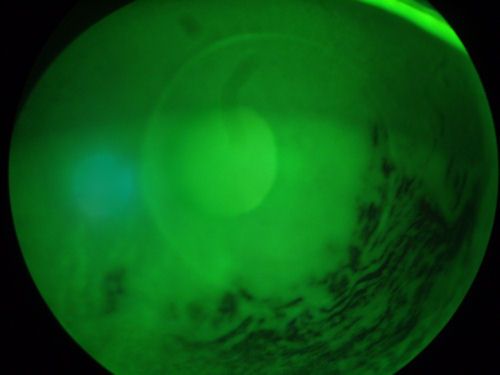
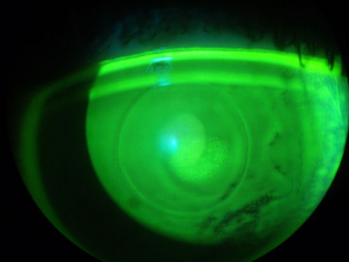
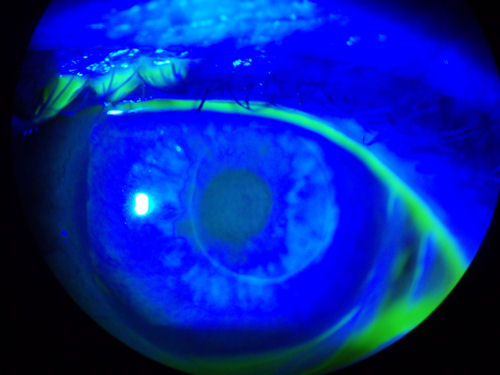

Еще одна варварская, ненужная операция на глазу, предшествовавшая LASIK, которая теперь выброшена на свалку рефракционных операций.
"Автоматическая пластинчатая кератопластика - это хирургическая процедура, при которой используются 2 прохода микрокератома - ручного автоматизированного инструмента, который создает присасывание к поверхности роговицы, и высокоскоростного вращающегося лезвия, создающего плоскость роговицы. При первом проходе формируется роговичный колпачок, в то время как при втором проходе удаляется определенное количество подлежащей стромальной ткани." Источник: Mayo Clin Proc., 2001, август; 76(8):823-9. Маннис М.Дж., Сигал У.А., Дарлингтон Дж.К. Осмысление рефракционной хирургии в 2001 году: зачем, когда, для кого и кем проводится? Клинический журнал Майо, 2001, август; 76(8): 823-9.
Изображения любезно предоставлены Доктор Эдвард Бошник .
На двух фотографиях ниже показан глаз пациента, перенесшего АЛК. В глаз был закапан зеленый краситель, а затем с помощью специального источника света были выделены пораженные ткани. Круглый объект в центре роговицы - это место расположения роговичного колпачка АЛК. Темные участки - это места, где роговица очень сухая.


На фотографии ниже показан глаз пациента, перенесшего АЛК в 2000 году. Обратите внимание на кольцо вокруг центральной части роговицы, где была изготовлена крышка. На роговице сформировался эктазия Пациент страдает от крайне искаженного зрения и тяжелой сухость глаз .

Следующее изображение было получено с помощью метода, называемого оптической когерентной томографией, или ОКТ. Прибор позволяет получить изображение в поперечном сечении путем сканирования передней части глаза (переднего сегмента) лучом света. Думайте об этом как об ультразвуке, использующем свет вместо звуковых волн для создания изображения живых тканей.
На этом снимке вы видите роговицу после АЛК. Пациент носит большие терапевтические контактные линзы, которые необходимы для восстановления зрительных функций, утраченных после АЛК. Белая изогнутая линия в верхней части изображения - это передняя поверхность линзы. Ниже видна более слабая белая изогнутая линия, обозначающая заднюю поверхность хрусталика. Между хрусталиком и роговицей находится пространство, заполненное физиологическим раствором, который имеет зернистый вид. Если присмотреться, то можно увидеть шрам в том месте, где роговичный колпачок прилегает к тонкой задней поверхности роговицы. На этом снимке видно, что после разреза роговица не заживает полностью и остается хрупкой навсегда. Нажмите на изображение, чтобы увеличить.
Ниже представлены фотографии сухой роговицы после операции ALK. Сухость глаз часто встречается после всех видов рефракционных операций на роговице. Нажмите на фотографии, чтобы увеличить.
Отказ от ответственности: Информация, содержащаяся на этом веб-сайте, представлена с целью предупреждения людей об осложнениях LASIK перед операцией. Пациентам, испытывающим проблемы, следует обратиться за консультацией к врачу.